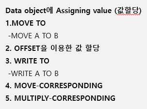

20220919 - assigning value, CONSTANTS, STATIC, TABLES
assigning value

MOVE-CORRESPONDING is most frequently used.
MOVE A TO B


DATA: BEGIN OF GS_NAME,
NAME1 TYPE C LENGTH 10,
NAME2 TYPE C LENGTH 10,
END OF GS_NAME.
GS_NAME-NAME1 = '미지정'.
GS_NAME-NAME2 = '오해원'.
WRITE: GS_NAME-NAME1, / GS_NAME-NAME2.
DATA: BEGIN OF GS_NAME,
NAME1 TYPE C LENGTH 10,
NAME2 TYPE C LENGTH 10,
END OF GS_NAME.
GS_NAME-NAME1 = '미지정'.
GS_NAME-NAME2 = '오해원'.
GS_NAME-NAME1 = GS_NAME-NAME2.
WRITE: GS_NAME-NAME1, / GS_NAME-NAME2.

DATA: BEGIN OF GS_NAME,
NAME1 TYPE C LENGTH 10,
NAME2 TYPE C LENGTH 10,
END OF GS_NAME.
GS_NAME-NAME1 = '미지정'.
GS_NAME-NAME2 = '오해원'.
MOVE GS_NAME-NAME2 TO GS_NAME-NAME1.
WRITE: GS_NAME-NAME1, / GS_NAME-NAME2.

DATA: BEGIN OF GS_NAME,
NAME1 TYPE C LENGTH 10,
DEGREE1 TYPE P DECIMALS 2,
END OF GS_NAME.
GS_NAME-NAME1 = '미지정'.
GS_NAME-DEGREE1 = '37.50'.
MOVE GS_NAME-DEGREE1 TO GS_NAME-NAME1.
CONDENSE GS_NAME-NAME1 NO-GAPS.
WRITE: GS_NAME-NAME1, / GS_NAME-DEGREE1.
OFFSET

OFFSET AND LENGTH를 활용하여 필드의 일부 값 정의
MOVE P1 TO P23


WRITE A TO B


WRITE보다 MOVE를 많이 씀
MOVE-CORRESPONDING
필드 값을 COPY
구조체에서 값을 할당할 때 사용
구조체의 같은 필드에 값이 복사
- 만약 구조체의 필드 이름의 순서가 서로 다른데 MOVE를 쓴다면 필드 이름에 관계없이 순서대로 할당되므로 구조체에서는 MOVE-CORRESPONDING 사용

FIELD가 같으면 순서가 달라도 괜찮음
DATA: BEGIN OF GS_STUDENT1,
ZCODE TYPE ZCODE_1,
ZKNAME TYPE ZKNAME_1,
ZENAME TYPE ZENAME_1,
ZGUBUN TYPE ZGUBUN_1,
ZTEL TYPE ZTEL_1,
END OF GS_STUDENT1.
DATA: BEGIN OF GS_STUDENT2,
ZCODE TYPE ZCODE_1,
ZGUBUN TYPE ZGUBUN_1,
ZKNAME TYPE ZKNAME_1,
ZENAME TYPE ZENAME_1,
ZTEL TYPE ZTEL_1,
END OF GS_STUDENT2.
GS_STUDENT1-ZCODE = 'SSU-01'.
GS_STUDENT1-ZKNAME = '오해원'.
GS_STUDENT1-ZENAME = 'Haewon Oh'.
GS_STUDENT1-ZGUBUN = 'F'.
GS_STUDENT1-ZTEL = '000-0000-0000'.
MOVE-CORRESPONDING GS_STUDENT1 TO GS_STUDENT2.
WRITE: GS_STUDENT2-ZCODE, / GS_STUDENT2-ZKNAME, / GS_STUDENT2-ZENAME, / GS_STUDENT2-ZGUBUN, / GS_STUDENT2-ZTEL.

DATA: BEGIN OF GS_STUDENT1,
ZCODE TYPE ZCODE_1,
ZKNAME TYPE ZKNAME_1,
ZENAME TYPE ZENAME_1,
ZGUBUN TYPE ZGUBUN_1,
ZTEL TYPE ZTEL_1,
END OF GS_STUDENT1.
DATA: BEGIN OF GS_STUDENT2,
ZCODE TYPE ZCODE_1,
ZGUBUN TYPE ZGUBUN_1,
ZKNAME TYPE ZKNAME_1,
ZENAME TYPE ZENAME_1,
ZTEL TYPE ZTEL_1,
END OF GS_STUDENT2.
GS_STUDENT1-ZCODE = 'SSU-01'.
GS_STUDENT1-ZKNAME = '오해원'.
GS_STUDENT1-ZENAME = 'Haewon Oh'.
GS_STUDENT1-ZGUBUN = 'F'.
GS_STUDENT1-ZTEL = '000-0000-0000'.
MOVE GS_STUDENT1 TO GS_STUDENT2.
WRITE: GS_STUDENT2-ZCODE, / GS_STUDENT2-ZKNAME, / GS_STUDENT2-ZENAME, / GS_STUDENT2-ZGUBUN, / GS_STUDENT2-ZTEL.

DATA: BEGIN OF GS_STUDENT1,
ZCODE TYPE ZCODE_1,
ZKNAME TYPE ZKNAME_1,
ZENAME TYPE ZENAME_1,
ZGUBUN TYPE ZGUBUN_1,
ZTEL TYPE ZTEL_1,
END OF GS_STUDENT1.
DATA: BEGIN OF GS_STUDENT2,
ZCODE TYPE ZCODE_1,
ZKNAME TYPE ZKNAME_1,
ZENAME TYPE ZENAME_1,
ZGUBUN TYPE ZGUBUN_1,
ZTEL TYPE ZTEL_1,
END OF GS_STUDENT2.
GS_STUDENT1-ZCODE = 'SSU-01'.
GS_STUDENT1-ZKNAME = '오해원'.
GS_STUDENT1-ZENAME = 'Haewon Oh'.
GS_STUDENT1-ZGUBUN = 'F'.
GS_STUDENT1-ZTEL = '000-0000-0000'.
MOVE GS_STUDENT1 TO GS_STUDENT2.
WRITE: GS_STUDENT2-ZCODE, / GS_STUDENT2-ZKNAME, / GS_STUDENT2-ZENAME, / GS_STUDENT2-ZGUBUN, / GS_STUDENT2-ZTEL.

DATA: BEGIN OF GS_STUDENT1,
ZCODE TYPE ZCODE_1,
ZKNAME TYPE ZKNAME_1,
ZENAME TYPE ZENAME_1,
ZGUBUN TYPE ZGUBUN_1,
ZTEL TYPE ZTEL_1,
END OF GS_STUDENT1.
DATA: BEGIN OF GS_STUDENT2,
ZZZCODE TYPE ZCODE_1,
ZZZKNAME TYPE ZKNAME_1,
ZZZENAME TYPE ZENAME_1,
ZZZGUBUN TYPE ZGUBUN_1,
ZZZTEL TYPE ZTEL_1,
END OF GS_STUDENT2.
GS_STUDENT1-ZCODE = 'SSU-01'.
GS_STUDENT1-ZKNAME = '오해원'.
GS_STUDENT1-ZENAME = 'Haewon Oh'.
GS_STUDENT1-ZGUBUN = 'F'.
GS_STUDENT1-ZTEL = '000-0000-0000'.
MOVE GS_STUDENT1 TO GS_STUDENT2.
WRITE: GS_STUDENT2-ZZZCODE, / GS_STUDENT2-ZZZKNAME, / GS_STUDENT2-ZZZENAME, / GS_STUDENT2-ZZZGUBUN, / GS_STUDENT2-ZZZTEL.
MULTIPLY-CORRESPONDING
가중치를 주어 계산할 때 사용
구조체와 구조체끼리의 곱하기 수행

Variable declaration
기타변수선언
- CONSTANTS
- STATIC
- TABLES
CONSTANTS
프로그램에서 자주 사용하게 되는 값을 상수로 선언하여 사용
한 번 선언 된 상수는 프로그램 내에서 변경 불가
숫자를 의미 있는 변수명으로 지정 - 가독성 증가
일반 상수, 구조체 상수 2가지 타입


STATIC
프로그램 Subroutine (FORM, FUNCTION)에서 자주 사용되는 Local 변수의 값을 지속적으로 저장할 경우 사용
구문 내 STATISCS로 선언된 Local 변수는 프로그램이 종료될 때까지 값 유지

TABLES
ABAP Dictionary Table, View, Structure를 선언하게 되면 ABAP Dictionary 타입과 같은 Data object를 생성하게 되는데, 이를 table work area라고 부르고, 프로그램 내에서 구조체처럼 사용가능

in-class practice


* 3
DATA: BEGIN OF T_ORDER,
ORDER TYPE ZEDU1_001-ZORDER VALUE 'ORDER-01',
ID TYPE ZEDU1_001-ID VALUE 'SSU-01',
PRODUCT_NUM TYPE ZEDU1_001-PRODUCT_NUM VALUE 'PRODUCT-01',
PRODUCT TYPE ZEDU1_001-PRODUCT VALUE 'computer',
VOLUME TYPE ZEDU1_001-VOLUME VALUE 10,
PRICE TYPE ZEDU1_001-PRICE VALUE 10000000,
ORDER_STATUS TYPE ZEDU1_001-STATUS VALUE '1',
ORDER_DATE TYPE ZEDU1_001-ZDATE VALUE '20220919',
ORDER_TIME TYPE ZEDU1_001-TIME VALUE '200000',
END OF T_ORDER.
* 4
DATA: BEGIN OF T_DELIVERY.
INCLUDE STRUCTURE T_ORDER.
DATA: DELIVERY_STATUS TYPE ZEDU1_002-STATUS VALUE '1',
DELIVERY_CODE TYPE ZEDU1_002-CODE VALUE 'DELI-01',
DELIVERY_DATE TYPE ZEDU1_002-DELIVERY_DATE VALUE '20220919',
DELIVERY_TIME TYPE ZEDU1_002-DELIVERY_TIME VALUE '200001',
END OF T_DELIVERY.
* 5
MOVE-CORRESPONDING T_ORDER TO T_DELIVERY.
* 6
DATA: BEGIN OF T_TEST,
ORDER TYPE ZEDU1_001-ZORDER,
ID TYPE ZEDU1_001-ID,
PRODUCT_NUM TYPE ZEDU1_001-PRODUCT_NUM,
PRODUCT TYPE ZEDU1_001-PRODUCT,
VOLUME TYPE ZEDU1_001-VOLUME,
PRICE TYPE ZEDU1_001-PRICE,
NAME TYPE C LENGTH 20,
AGE TYPE N,
HEIGHT TYPE N,
END OF T_TEST.
MOVE T_ORDER TO T_TEST.